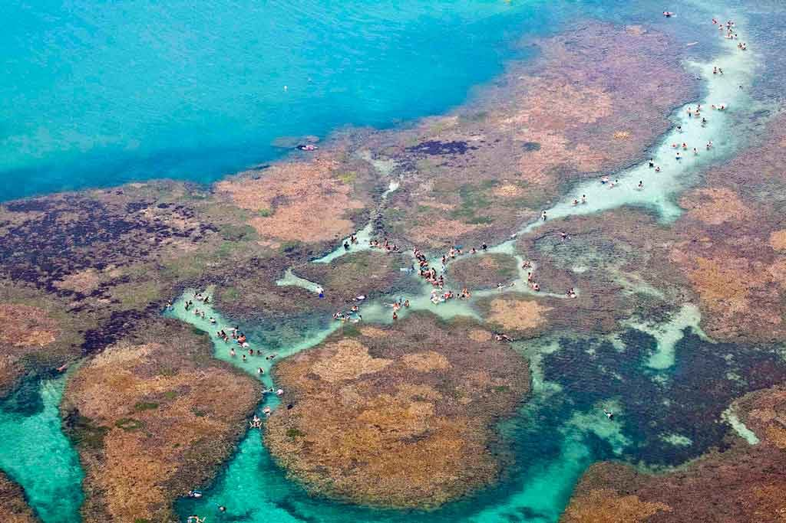
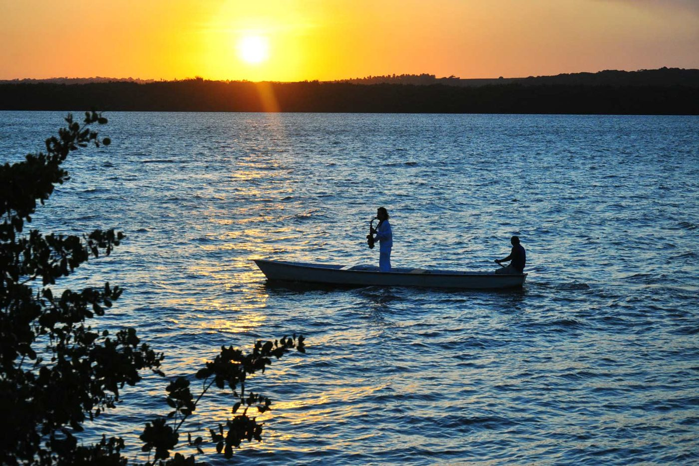
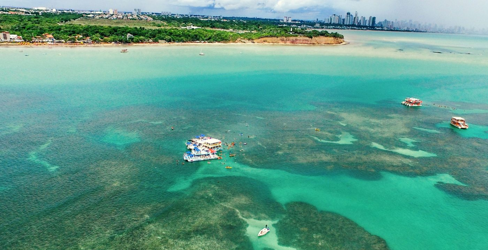
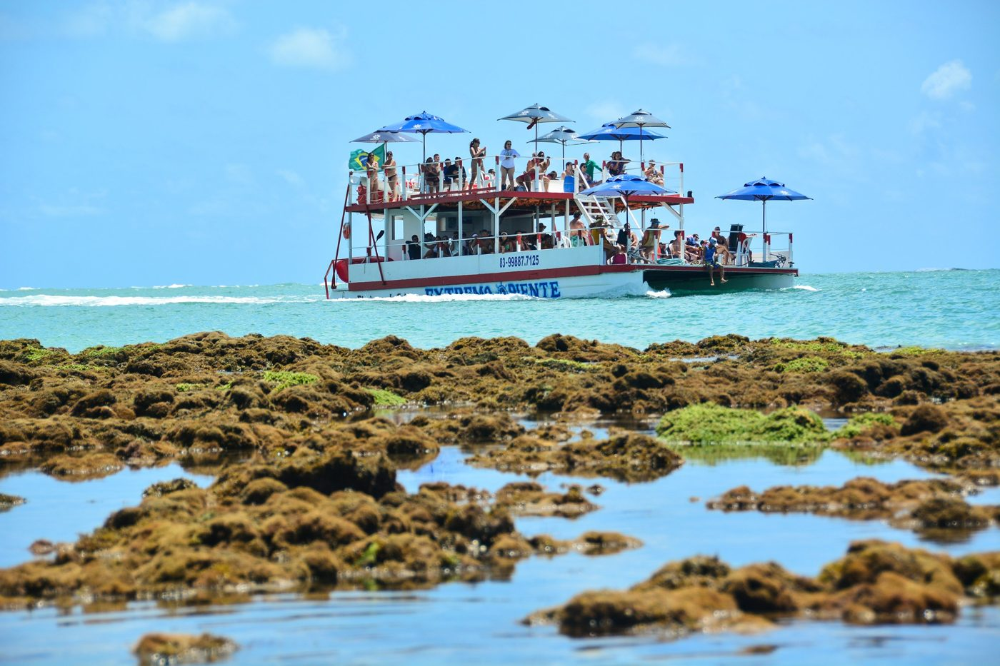
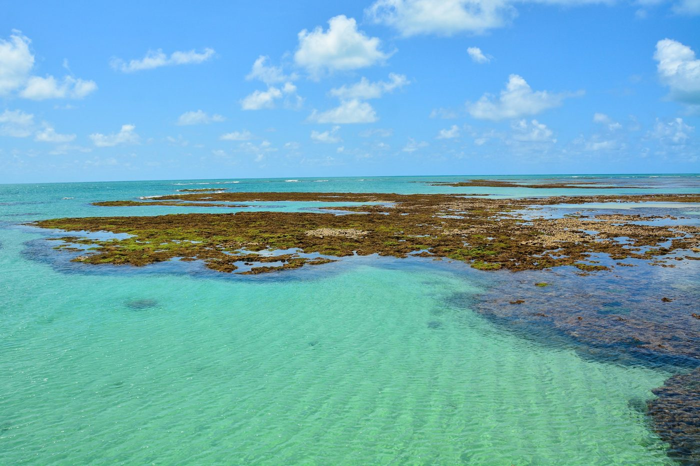
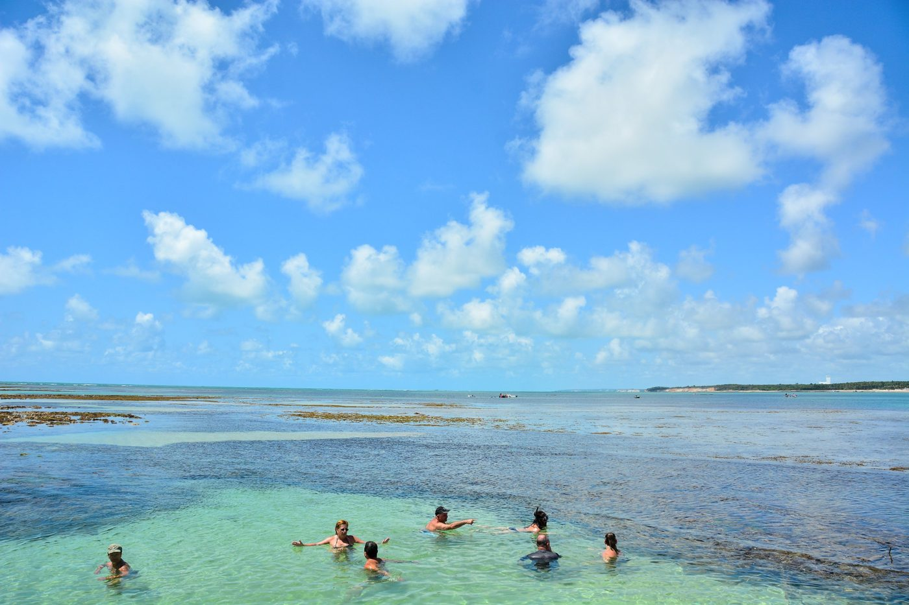
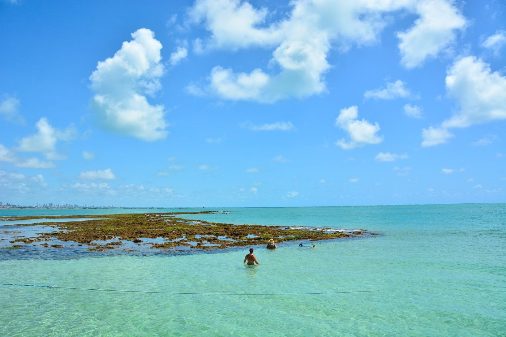
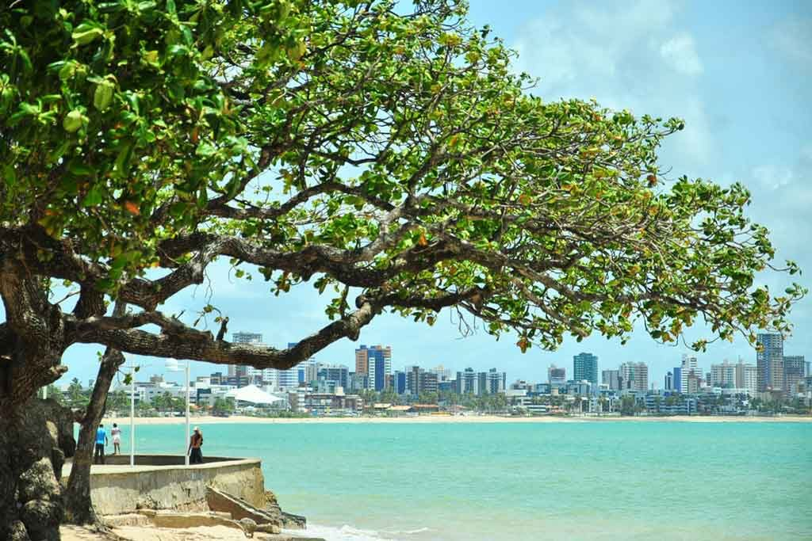
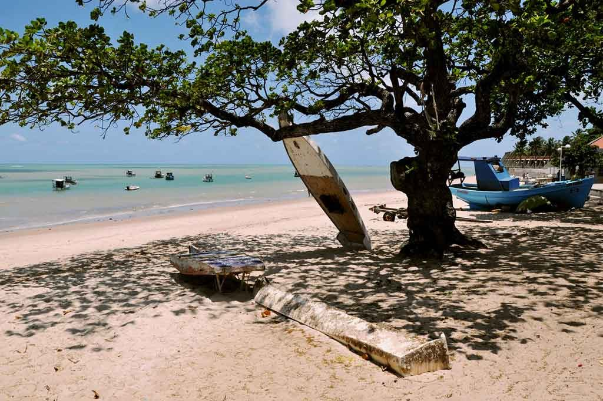
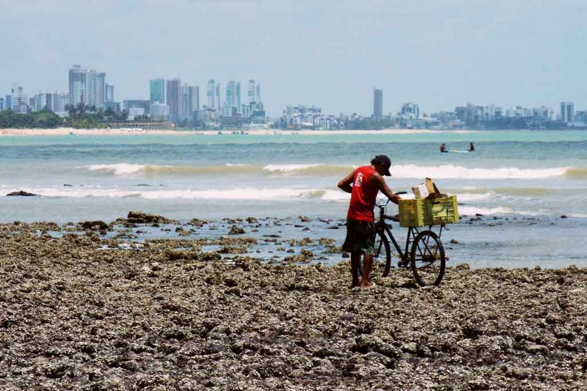

Piscinas do Picãozinho
Piscinas naturais que surgem nos recifes na maré baixa, em frente a Tambaú. Catamarãs e jangadas levam até lá.

Piscinas naturais que surgem nos recifes na maré baixa, em frente a Tambaú. Catamarãs e jangadas levam até lá.

No Rio Paraíba, o fim de tarde é famoso: um saxofonista toca o Bolero de Ravel de dentro de um barco.

Conjunto barroco no Centro Histórico, um dos mais importantes do Nordeste. Hoje abriga o Centro Cultural São Francisco.

Construção colonial no Centro Histórico, usada antigamente para guardar pólvora.

O ponto mais oriental das Américas, com falésia e farol. Daqui se vê o primeiro nascer do sol do continente.

Recifes que aparecem na maré baixa. Barcos levam os visitantes para mergulhar com snorkel nas águas claras.





